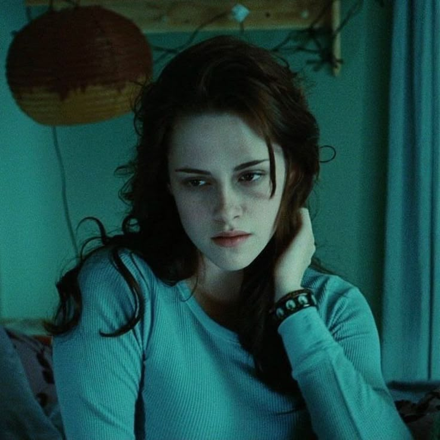
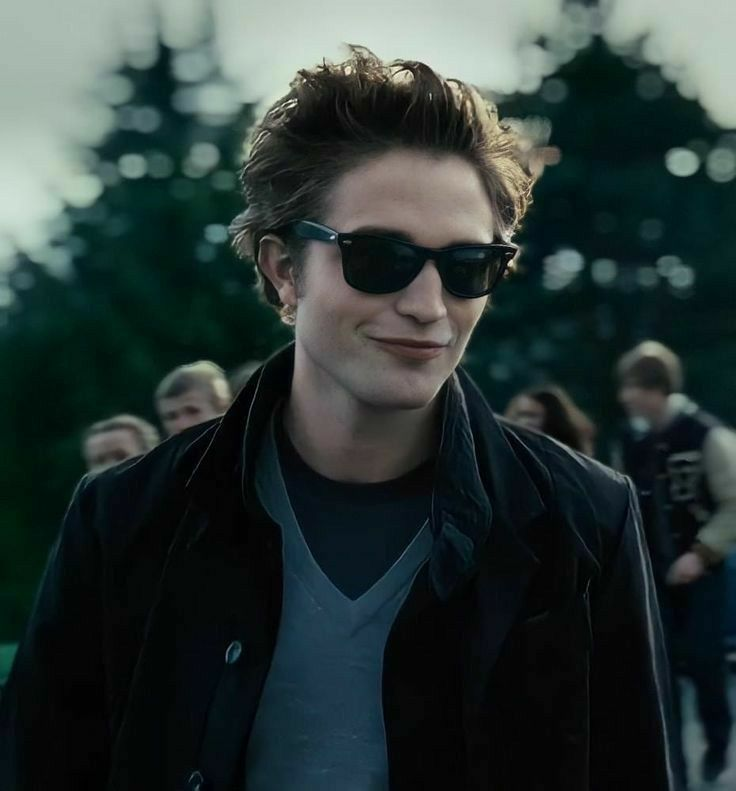
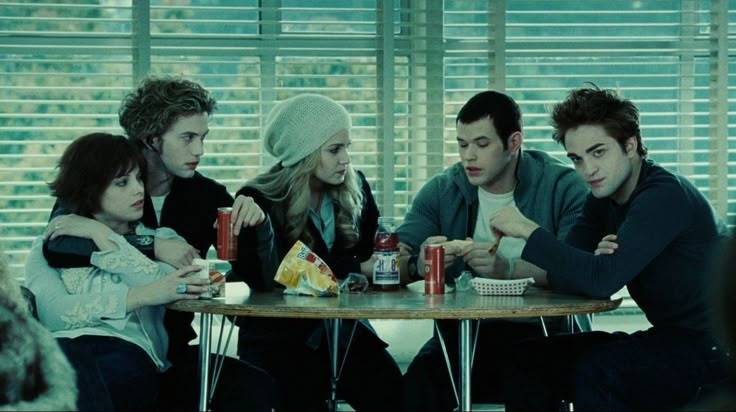
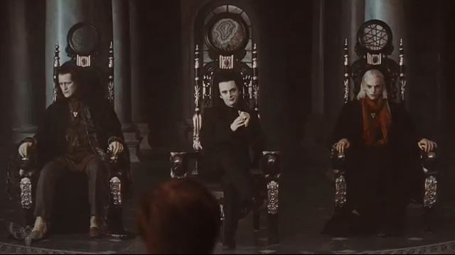

🔮 Bella Swan 🔮
Bella Swan, the protagonist of Twilight, is a quiet, introspective, and often self-deprecating teenager who moves from Phoenix, Arizona, to the small, rainy town of Forks, Washington, to live with her father. She is portrayed as intelligent, mature beyond her years, and somewhat clumsy, which adds to her vulnerability. Bella quickly becomes enamored with the mysterious Edward Cullen, whose supernatural secret—being a vampire—changes the course of her life. She is deeply loyal and self-sacrificing, often putting others before herself, even at great personal risk. Though she starts as a seemingly ordinary girl, her relationship with Edward exposes her to a hidden world of vampires and werewolves, forcing her to confront danger, love, and her own mortality. Bella's character is defined by her strong-willed nature and unwavering love for Edward, making her willing to become a vampire despite the consequences. Over the series, she transforms from a shy and awkward girl into a powerful figure in her own right, embracing her identity as a vampire with newfound confidence and strength.
🧛♂️ Edward Cullen 🧛♂️
Edward Cullen, a central character in Twilight by Stephenie Meyer, is a 107-year-old vampire who appears to be a seventeen-year-old high school student. As a member of the Cullen family, he follows a "vegetarian" vampire lifestyle, abstaining from human blood and surviving on animal blood instead. Edward is described as strikingly handsome, with pale skin, golden eyes that darken with thirst, and an almost otherworldly presence. He possesses superhuman abilities, including immense strength, speed, and telepathic powers that allow him to read minds—except for Bella Swan’s, which fascinates and frustrates him. His personality is deeply introspective, brooding, and protective, especially when it comes to Bella, with whom he falls deeply in love despite fearing he might endanger her. Throughout the series, Edward struggles with his nature as a vampire and his desire to keep Bella safe, often battling between staying with her and leaving for her own good. His love for Bella is intense and unwavering, leading to a dramatic journey that includes conflict with other vampires, near-death experiences, and ultimately, his acceptance of Bella as part of his world when she chooses to become a vampire. Edward embodies the classic romantic hero—mysterious, self-sacrificing, and deeply devoted—making him an iconic figure in modern supernatural romance.
🦇 Cullen Family 🦇
The Cullen family in Twilight is a unique coven of vampires who choose to live differently from most of their kind by abstaining from human blood and feeding only on animals, earning them the title of "vegetarian" vampires.
☆♡ Members of the Cullen family ♡☆
Roaslie, Edward, Emmett, Alice, Jasper, Esme, Carlisle
🩸 The Volturi 🩸
The Volturi are an ancient and powerful coven of vampires who serve as the ruling authority of the vampire world in Twilight. Residing in Volterra, Italy, they enforce vampire laws with an iron grip, ensuring that their kind remains hidden from humans. Led by Aro, who can read every thought a person has ever had with a single touch, the Volturi also include the calculating and manipulative Caius, who harbors a deep hatred for werewolves, and the composed yet authoritative Marcus, who possesses the ability to sense relationships. They are guarded by a group of fiercely loyal and gifted vampires, including Jane, who can inflict excruciating pain with her mind, and her twin brother, Alec, who can render victims completely senseless. The Volturi maintain their power not only through fear but also by recruiting talented vampires into their ranks, ensuring that they remain unmatched in strength and influence. While they claim to uphold order, they often act out of self-interest, eliminating threats and collecting vampires with powerful abilities to strengthen their own rule. Their interest in Bella Swan and her connection to the Cullens grows as they realize she is immune to many vampire powers, leading to several intense confrontations throughout the series. As the ultimate antagonists of Twilight, the Volturi embody the darker side of the vampire world, where power, control, and ruthless enforcement of the rules dictate their existence.
